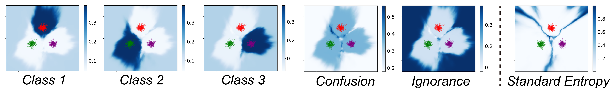
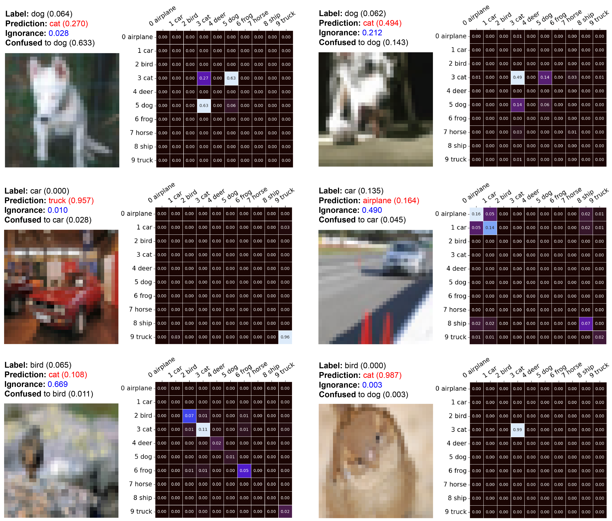

In real-world scenarios, typical visual recognition systems could fail under two major causes, i.e., the misclassification between known classes and the excusable misbehavior on unknown-class images.
To tackle these deficiencies, flexible visual recognition should dynamically predict multiple classes when they are unconfident between choices and reject making predictions when the input is entirely out of the training distribution. Two challenges emerge along with this novel task. First, prediction uncertainty should be separately quantified as confusion depicting inter-class uncertainties and ignorance identifying out-of-distribution samples. Second, both confusion and ignorance should be comparable between samples to enable effective decisionmaking.
In this paper, we propose to model these two sources of uncertainty explicitly with the theory of Subjective Logic. Regarding recognition as an evidence-collecting process, confusion is then defined as conflicting evidence, while ignorance is the absence of evidence. By predicting Dirichlet concentration parameters for singletons, comprehensive subjective opinions, including confusion and ignorance, could be achieved via further evidence combinations. Through a series of experiments on synthetic data analysis, visual recognition, and open-set detection, we demonstrate the effectiveness of our methods in quantifying two sources of uncertainties and dealing with flexible recognition.
A 3-class classification problem. The Gaussian-distributed training data are depicted with dots, while the background color indicates the predicted value of the corresponding location. We provide our model’s estimated single-class belief, confusion and ignorance. The entropy over predictions of a standard net trained with cross-entropy loss is shown in the last subfigure for comparison. 
Matrices of confusion of misclassified samples on the CIFAR-10 dataset. The diagonal of each matrix is set to the singleton belief of each class. Notice that each heatmap is normalized individually. The total ignorance is demonstrated in the caption. 
@inproceedings{fan2023flexible,
title={Flexible Visual Recognition by Evidential Modeling of Confusion and Ignorance},
author={Fan, Lei and Liu, Bo and Li, Haoxiang and Wu, Ying and Hua, Gang},
booktitle={Proceedings of the IEEE/CVF International Conference on Computer Vision},
pages={1338--1347},
year={2023}
}